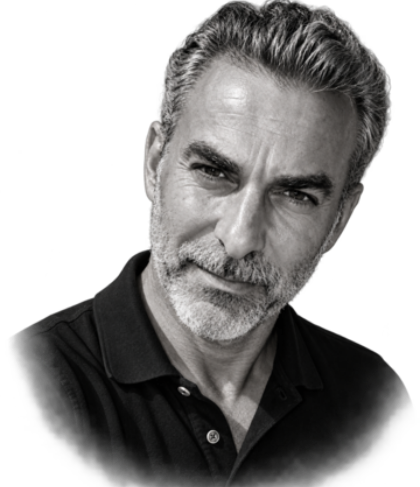

Réalisateur avec plus de 25 ans d’expérience en publicité, télévision et fiction. Aujourd’hui spécialisé dans la création de contenus générés par IA.
J’associe écriture cinématographique, direction artistique et technologies génératives pour produire des films et contenus de marque à forte valeur créative.